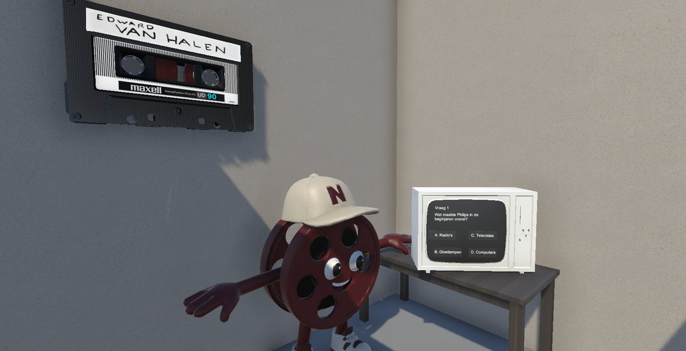
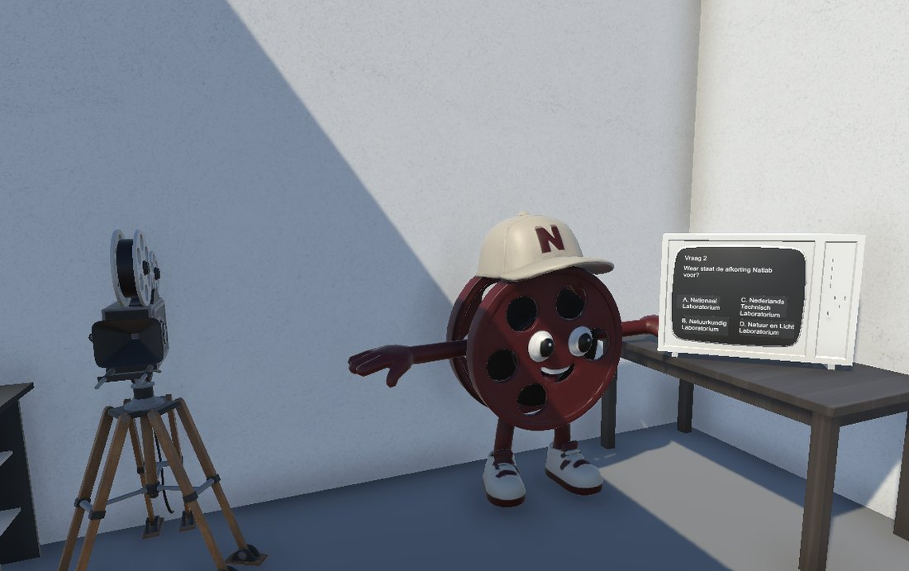
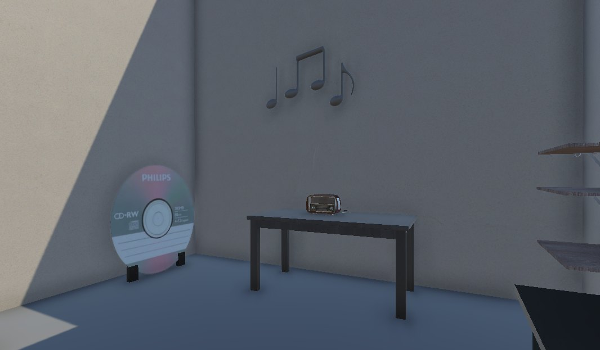
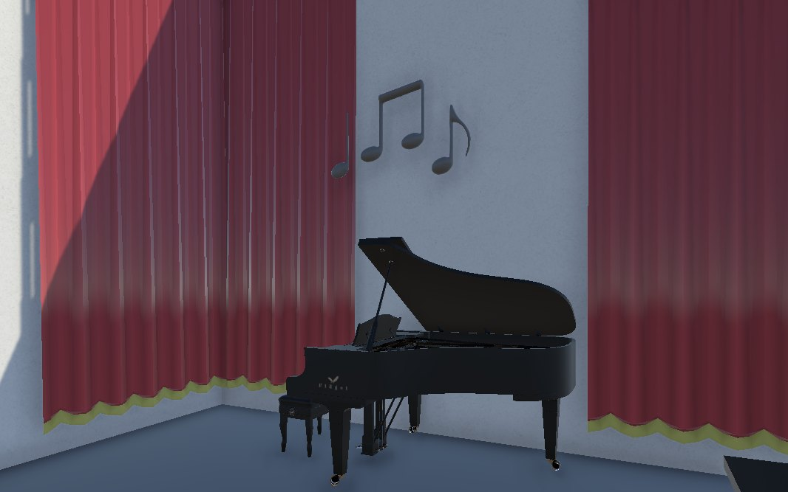

Unity · Needle Engine · Studio project
NatLab AR Tour
An AR tour of the building where Philips invented the CD. I built the AR side.

The guide — a film reel with an N cap — asks the questions on an old television set.
Overview
The school building used to be the Philips NatLab, where a lot of well-known inventions were made — the CD among them. The NatLab cinema, which sits in the same building, wanted more young people to know that. The team was game developers, web developers and content producers together, and I was on the game side.
My part was the AR tour. The rooms are built as a normal Unity scene, and Needle Engine exports that scene to the web, so it runs in the phone's own browser instead of in an app you have to install first. That mattered here: visitors are standing in the building already, and nobody downloads an app to look at a wall.
What I built
- The AR rooms — the walls, the lighting, the materials and the objects that carry the story: a Philips CD-RW, a cassette, a film projector, an old radio, a piano behind theatre curtains.
- The guide — a film-reel character with an N cap who stands next to a period television and asks the questions.
- The animation — a Timeline that plays through the scene, with its own animation clip and director.
- A trigger from outside the scene —
ColorChangeDetectorwatches a material's colour and starts the Timeline the moment it changes, so something happening elsewhere in the app can set the animation off. - A play hook —
ReactScript, one public method the rest of the app can call to start the animation. (The name is about reacting to an event; it has nothing to do with React.) - Click interaction —
Clickingscript, which hides an object once you have dealt with it.
Technologies I used
- Unity
- Needle Engine, to export the scene to the browser over WebXR
- C# for the interaction and trigger scripts
- Unity Timeline and the animation system
The surrounding web app — the timeline of the building's history, the quiz pages and the studio section — was built by the web developers on the team in React. I did not work on that part.
A look around the rooms



What I learned
- Getting a Unity scene to run in a browser, which is not the same as getting it to run in the editor
- Starting an animation from something outside the scene, instead of from a button inside it
- Dressing a room with models, materials and light so it reads as a place with a history
- Building for a real client with their own wishes, not a made-up assignment
- Working in a team with web developers and content producers, where my part had to fit theirs